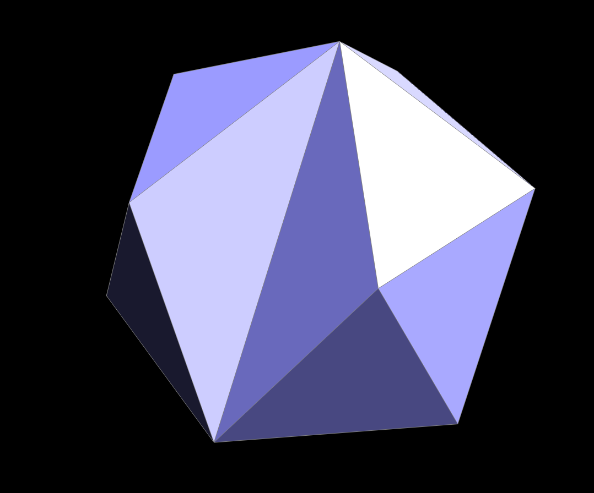
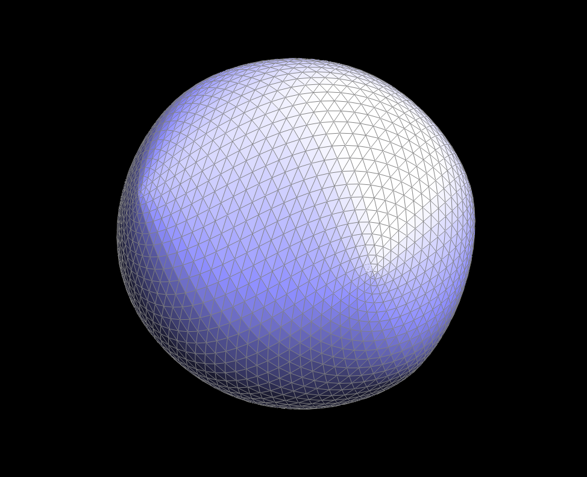
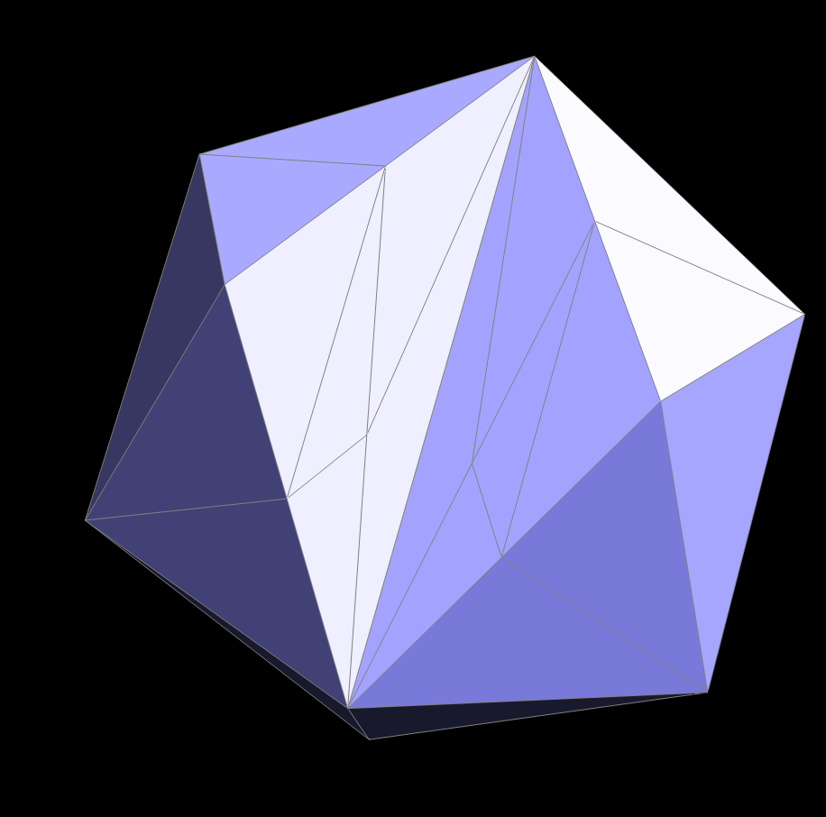
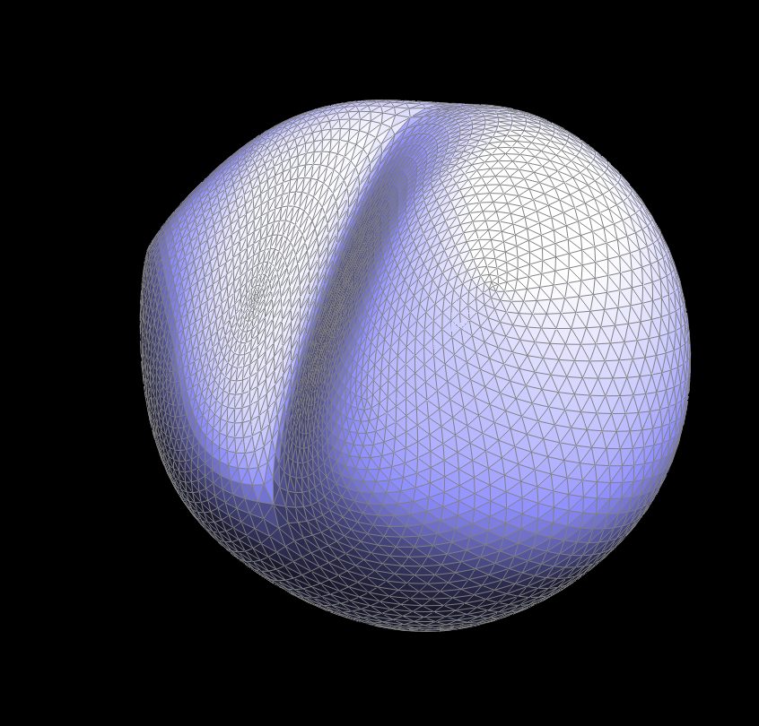
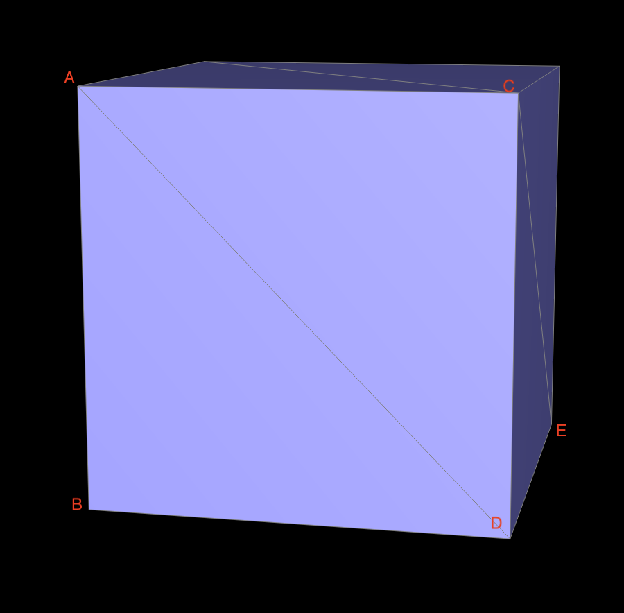
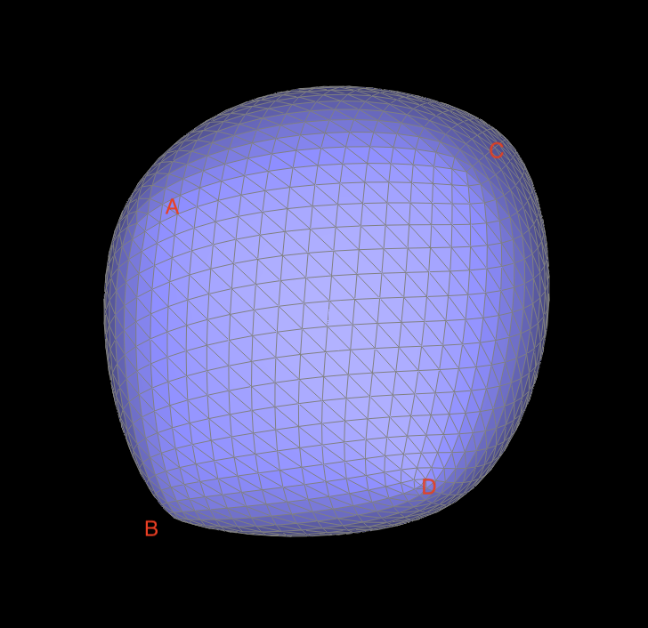
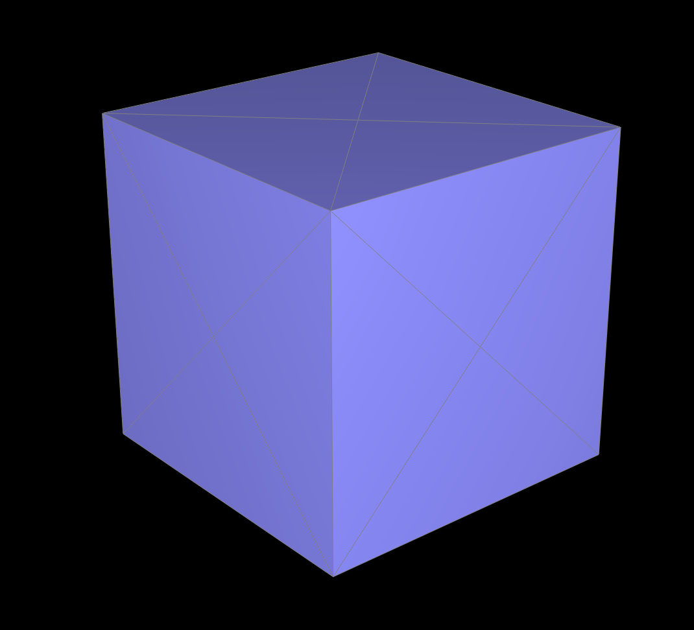
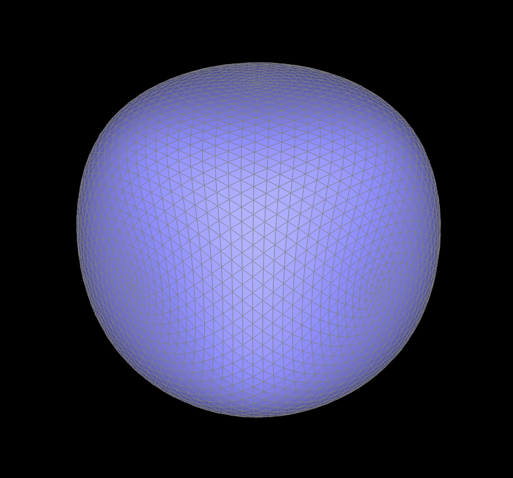

Overview
In this assignment I implemented a number of geometrical modeling features discussed in class in C++, including Bezier curves, Bezier surfaces, and triangle meshes using the provided half-edge data structure that also supports edge flipping, splitting and loop subdivision. Through completing this project I have learned how Bezier curves and surfaces can be procedurally generated, how the half-edge data structure works, and how to subdivide given meshes.
Section I: Bezier Curves and Surfaces
Part 1: Bezier Curves with 1D de Casteljau Subdivision
Briefly explain de Casteljau's algorithm and how you implemented it in order to evaluate Bezier curves.
De Casteljau's algorithm is a way to recursively generate points that lie on a Bezier curve given the control points: suppose we have n control points, then de Casteljau's algorithm takes in a parameter t, and performs the lerp function using t on consecutive control points to produce a new list of n-1 control points. It then repeats this step until the number of points is reduced to 1, and that point is on the Bezier curve at parameter t. The collection of points that corresponds to all the t values between 0 and 1 is the Bezier curve itself. In this part, I implemented BezierCurve::evaluateStep, where a std::vector
Take a look at the provided .bzc files and create your own Bezier curve with 6 control points of your choosing. Use this Bezier curve for your screenshots below.
Show screenshots of each step / level of the evaluation from the original control points down to the final evaluated point. Press E to step through. Toggle C to show the completed Bezier curve as well.

|

|

|

|

|

|
Show a screenshot of a slightly different Bezier curve by moving the original control points around and modifying the parameter \(t\) via mouse scrolling.
Part 2: Bezier Surfaces with Separable 1D de Casteljau
Briefly explain how de Casteljau algorithm extends to Bezier surfaces and how you implemented it in order to evaluate Bezier surfaces.De Casteljau's algorithm can be extended to 3D surfaces with the following procedures: given an array of nxn control points, we first evaluate each row using de Casteljau's algorithm with parameter u, which will output n points; then we evaluate these points using de Casteljau's algorithm with parameter v to obtain the final point that lies on the bezier surface. The entire bezier surface is the collection of points corresponding to all combinations of u and v, each between 0 and 1. In this part, I implemented BezierPatch::evaluateStep, which is essentially the function from part 1 but for 3D points; this function is then used by BezierPatch::evaluate1D to obtain the parameter point for each row, and finally BezierPatch::evaluate runs evaluate1D again on the parameter points to output the final point. This function is called recursively, on the range of all possible u and v values, to produce the final curve.
Show a screenshot of bez/teapot.bez (not .dae) evaluated by your implementation.
Section II: Triangle Meshes and Half-Edge Data Structure
Part 3: Area-Weighted Vertex Normals
Briefly explain how you implemented the area-weighted vertex normals.I used a do-while loop as shown in the primer to iterate through all the faces adjacent to the given vertex. For each non-boundary face, I obtained the coordinates of all of its vertices by iterating through the half-edges, then multiplied its normal vector with the area of the face (calculated by halving the norm of the cross product of two of its edge vectors, which are just differences between 2 pairs of vertices) to get its weighted normal. Finally, I added all the weighted normal vectors together and then normalized the resulting vector to obtain the vertex normal.
Show screenshots of dae/teapot.dae (not .bez) comparing teapot shading with and without vertex normals. Use Q to toggle default flat shading and Phong shading.
Part 4: Edge Flip
Briefly explain how you implemented the edge flip operation and describe any interesting implementation / debugging tricks you have used.For this part, I followed the procedure described in the project spec page very closely: I first checked if either faces adjacent to the given edge are boundary faces, and made sure the function returns instantly if that turned out to be true; then I grabbed every single primitives and half-edges related to the operation and reassigned pointers for all of them. One interesting trick I used is that I realized I can name all the pointers according to my diagram: so for example I named the 4 relevant points a, b, c, d respectively, and the 2 relevant faces abc and cbd. This naming trick made it much easier for me to visualize the pointers I need to obtain and reassign. To help myself conceptualize the change even further, I imagined the flip operation as the cb edge being rotated counterclockwise: so abc became abd, cbd became cad etc., and updated the pointers accordingly.
Show screenshots of the teapot before and after some edge flips.
Write about your eventful debugging journey, if you have experienced one.
Worked first time :)
Part 5: Edge Split
Briefly explain how you implemented the edge split operation and describe any interesting implementation / debugging tricks you have used.For this part I largely followed the same procedure as part 4: I first checked for boundary faces, then I grabbed every single primitives and half-edges related to the operation, created all the necessary new elements, and reassigned pointers for all of them. While doing this part I realized that I could increase the clarity provided by the naming scheme even further by renaming certain element pointers: for example, I imagined the central cb edge being pushed upwards as part of split operation, so cb becomes cm, cbd becomes cmd and so on; to represented these changes, I created new iterators cm and cmd, made them equal to the old cb and cbd, and used these new elements instead for the second half of the function. Because these are pointers, any changes to the pointed object is reflected across all pointers, therefore I do not have to worry about having to update the pre-renaming version of these elements as well. This trick made it way easier for me to implement and check all my pointer reassignments.
Show screenshots of a mesh before and after some edge splits.
Show screenshots of a mesh before and after a combination of both edge splits and edge flips.
Write about your eventful debugging journey, if you have experienced one.
Worked first time :)
If you have implemented support for boundary edges, show screenshots of your implementation properly handling split operations on boundary edges.
Part 6: Loop Subdivision for Mesh Upsampling
Briefly explain how you implemented the loop subdivision and describe any interesting implementation / debugging tricks you have used.For this part I followed the given 5 step process: first I iterated through every vertex in the mesh and computed their new positions to be stored under Vertex::newPosition according to the given formula, and marked them as original vertices; then I iterated through every edge, marked them as original, and computed the position of the new vertex that would be inserted on it and stored those positions in Edge::newPosition; then I performed the split operation on every original edge, while marking all the newly created vertices and edges as such to avoid an infinite loop; then I iterated through all the edges, flipping any new edge that connects a new and old vertex; finally I went through every vertices again-if they are original I copied their position from Vertex::newPosition, and if they are new I copied their position from Edge::newPosition.
This part was also interesting because it was the first time I encountered an actual severe bug while doing this project. When I first wrote my code the program behaved very strangely and In fact crashed after pressing L a second time. I was very confused at first, but then by looking at it I realized that all the positions appear to be correct, so the problem could only lie with my splitting and flipping operations. I ran the program after removing the flipping step, and the behavior was correct, so I looked very carefully at the flips (and also made each edge print out their isNew values) and realized what was going on: after the splits every edge is now split into 2 edges, and I had only marked one of them as original; so when the flipping step came around, the other edge was marked new, and it also connects an original vertex to the newly created vertex within the edge, so it would get flipped as well-my program was flipping double the intended the amount! The bug ended up taking a while to fix (I had to also make sure the split step would not go into an infinite loop), but after knowing the problem I was eventually able to patch up the code.
Take some notes, as well as some screenshots, of your observations on how meshes behave after loop subdivision. What happens to sharp corners and edges? Can you reduce this effect by pre-splitting some edges?
|

|

|
|

|

|
After a few rounds of loop subdivision, meshes become significantly smoother. As shown in the first 2 screenshots, the sharp edge that caves in in the middle is essentially gone after the loop subdivisions; the two sharp corners to its sides remain, but they are way less pronounced as well. I tried pre-splitting a few of the edges around the middle edge, and my best results in terms of reducing the smoothing effects are shown in the second set of screenshots: I was able to keep a more pronounced cave-in shape in the center of the mesh.
Load dae/cube.dae. Perform several iterations of loop subdivision on the cube. Notice that the cube becomes slightly asymmetric after repeated subdivisions. Can you pre-process the cube with edge flips and splits so that the cube subdivides symmetrically? Document these effects and explain why they occur. Also explain how your pre-processing helps alleviate the effects.
|

|

|
As we can observe from these screenshots, the cube becomes asymmetrically stretched and in fact begins to resemble a parallelpiped after loop subdivision. To illustrate the cause of this effect, we shall use the labeled vertex D as an example: when calculating a vertex’s new position, we take the positions of all of its neighbors into account, weighted equally; here if all the diagonal lines (such as AD) did not exist, then D’s neighbors would be B, C, and E, 3 points that are symmetric from the perspective of D because cube.dae is a regular cube. This means that if we take an equally-weighted average of B, C, and E, the resulting point would lie on the line that passes through the cubes center and D, pulling D towards the center in a symmetric manner. The same procedure will be done for every other vertex as well by loop subdivision, resulting in every vertex being pulled inwards symmetrically (in fact identically). However due to the existence of the diagonal lines (specifically AD here), A is actually also a neighbor of D, so the loop subdivision algorithm will have to account for A’s position as well when determining the new position of D; but unlike B, C, or E, A does not have any symmetric counterparts from the perspective of D to “cancel out” its influence, so A ends up exerting an asymmetrical amount of influence on D, pulling it towards A more than any other directions. D has the same effect on A as well, and we can see from the second screenshot that A and D are a lot closer than B and C (two vertices that do not share a diagonal) after loop subdivision because they have been “pulling each other in”. This effect is present for every other vertex as well, resulting in the asymmetrical shape we see here.
|

|

|
After knowing why the effect exists, we can very easily fix it by pre-splitting all 6 diagonals; this creates 6 more diagonals, and helps make sure that every vertex now have 2 sets of symmetric neighbors: the 3 neighbors from the edges, and the 3 neighbors from the diagonals (essentially the centers of the 3 faces that the vertex is adjacent to). These neighbors combined will cancel out each other’s influences, and pull the vertex in symmetrically.
If you have implemented any extra credit extensions, explain what you did and document how they work with screenshots.
Part 7 (Optional, Possible Extra Credit)
Save your best polygon mesh as partsevenmodel.dae in your docs folder and show us a screenshot of the mesh in your write-up.
Include a series of screenshots showing your original mesh and your mesh after one and two rounds of subdivision. If you have used custom shaders, include screenshots of your mesh with those shaders applied as well.
Describe what you have done to enhance your mesh beyond the simple humanoid mesh described in the tutorial.